1.Background
Many investors analyze stocks based on their fundamentals such as their revenue, valuation, or industry trends but fundamental factors aren’t always reflected in the market price.
Technical analysis using charts help to identify trading signals and price patterns, and provides as a window into market psychology to identify opportunities to profit.
Project Group Scope : provides various tools for a beginner investor,to analyse stocks past performance and forecasting with 3 parts:
1)Forecasting ( leveraging ModelTime package)
2)Visualisations for Stock Performance ( leveraging TidyQuant Package)
3)Extensive Time Series analysis ( leveraging TimeTK)
** I will be covering part 2).**
2. Objective/Layout of this assignment
This assignment explores the features of TidyQuant to experiment what is best of the user, and also to identify any gaps that an eventually Shiny App implementation can adderss to improve the user’s experience.
After some research,the following 3 charts provide the most information for the beginner trader to study a single stock:
- Price Movement - Candlesticks Chart
- This chart reflect the impact of investor sentiment on security prices and are used by technical analysts to determine when to enter and exit trades.
- Stock Price and Trading Volume - Line Charts/Bart Charts
- This chart provide the the volumes have been in the past and what they are currently before making a decision.
- Moving averages (15-day, 50-day and 200-day) on a particular stock price movement-
- This chart provides information about the moving average. For Liquid/Volatile stocks may benefit from shorter (eg.15-day) moving average analysis where as illiquid stocks my be examined with 50-day moving average.
After some research, the typical four charts that is useful for a trader to analysis of group of stocks or portfolio :
1)Closing prices
2)Moving Average
3)Bollinger Bands
4)Annual Returns
3. Literature Review - Why TidyQuant (Tidy Quantitative Financial Analysis)

# Loads tidyquant, lubridate, xts, quantmod, TTR, and PerformanceAnalytics
packages <- c('tidyverse','tidyquant','lubridate','xts','quantmod','TTR','PerformanceAnalytics')
for (p in packages){
if (!require(p,character.only=T)){
install.packages(p)
}
library(p, character.only=T)
}
TidyQuant addresses a few gaps that in the existing quantitative analysis functions (QAF).
GAP-1
- Existing Quantitative analysis functions (QAF) -such as xts, zoo, quantmod, TTR, and PerformanceAnalytics work with time-series objects. These objects do not work well with the data frames or the tidyverse workflow.
SOLUTION- 1 +TidyQuant addresses this by providing a wrapper to enabling seamless usage within the tidyverse workflow.
GAP-2: Existing QAF functions for Stock Analysis do not provide any easy to use functions to load stock information and stock indices.
- SOLUTION-2 : TidyQuant addresses this by implementing the following functions :Get a Stock Index, tq_index(), or a Stock Exchange, tq_exchange(): Returns the stock symbols and various attributes for every stock in an index or exchange. Eighteen indexes and three exchanges are available. To get Quantitative Data, tq_get()is implemented to provide a one-stop shop to get data from various web-sources.
GAP-3 : PerformanceAnalytics package consolidates functions to compute many of the most widely used performance metrics.
- SOLUTION -3 : Tidyquant integrates this functionality so it can be used at scale using the split, apply, combine framework within the tidyverse. Two primary functions integrate the performance analysis functionality:
- tq_performance implements the performance analysis functions in a tidy way, enabling scaling analysis using the split, apply, combine framework
- tq_portfolio provides a useful tool set for aggregating a group of individual asset returns into one or many portfolios.
- SOLUTION -3 : Tidyquant integrates this functionality so it can be used at scale using the split, apply, combine framework within the tidyverse. Two primary functions integrate the performance analysis functionality:
3.1 TidyQuant - Charting
The tidyquant package leverages ggplot2 - and has three primary geometry (geom) categories and one coordinate manipulation (coord) category that i will explore:
Chart Types: Two chart type visualizations are available using geom_barchart and geom_candlestick.
Moving Averages: Seven moving average visualizations are available using geom_ma.
Bollinger Bands: Bollinger bands can be visualized using geom_bbands. The BBand moving average can be one of the seven available in Moving Averages.
Zooming in on Date Ranges:
- Two coord functions are available (coord_x_date and coord_x_datetime), which prevent data loss when zooming in on specific regions of a chart. This is important when using the moving average and Bollinger band geoms.
3.2 TidyQuant - Portfolio Analysis
The Performance Analytics package in TidyQuant consolidates functions to compute the most widely used stock performance metrics. Tidquant integrates this functionality so it can be used at scale using the split, apply, combine framework within the tidyverse.
Two primary functions integrate the performance analysis functionality:
tq_performance - implements the performance analysis functions in a tidy way, enabling scaling analysis using the split, apply, combine framework.
tq_portfolio - provides a useful tool set for aggregating a group of individual asset returns into one or many portfolios.
4. Loading and Preping Data : Single Stock and Multiple Stock analysis
Tidyquant provides a function tq_get for directly loading data. For the purpose of this assignment i use this funciton to get the data for APPLE, AMAZON, FACEBOOK< GOOGLE, NETFLIX. To preapre for a multi-stock analysis evaluation, i also built combined data set.
AAPL <- tq_get("AAPL", get = "stock.prices", from = "2011-01-01", to = "2021-03-31")
AMZN <- tq_get("AMZN", get = "stock.prices", from = "2011-01-01", to = "2021-03-31")
GOOG <- tq_get("GOOG",get = "stock.prices", from = "2011-01-01", to = "2021-03-31")
NFLX <- tq_get("NFLX",get = "stock.prices", from = "2011-01-01", to = "2021-03-31")
FB <- tq_get("FB",get = "stock.prices", from = "2011-01-01", to = "2021-03-31")
FAANG<- rbind(FB,AAPL,AMZN,NFLX,GOOG)
Setup the End Data for review as last day in March of 2021
end <- as_date("2021-03-31")
5.Testing and Prototyping - Single Stock Analysis ( Using APPLE stock)
5.1 Candlestick Chart
5.1.1 Candlestick Chart- Complete Period
AAPL %>%
ggplot(aes(x = date, y = close)) +
geom_candlestick(aes(open = open, high = high, low = low, close = close)) +
labs(title = "AAPL Candlestick Chart", y = "Closing Price", x = "") +
scale_color_tq(theme = "dark") +
scale_y_continuous(labels = scales::dollar)
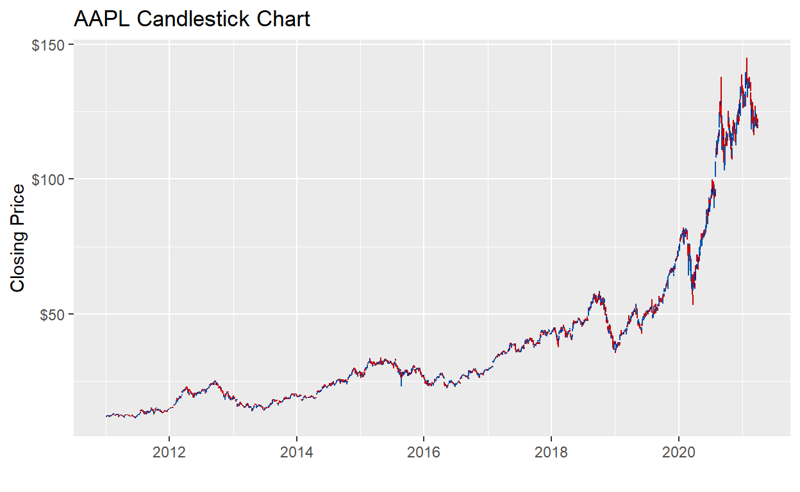
KEY LEARNING : A candlestick chart for a long period eg. more than 5 years is not really meaningful. THe user will need to able to zoom into the prefered periods eg. 6 weeks or less.
5.1.2 Candlestick Chart- Zooming into a 6 week window.
AAPL %>%
ggplot(aes(x = date, y = close)) +
geom_candlestick(aes(open = open, high = high, low = low, close = close)) +
labs(title = "AAPL Candlestick Chart",
subtitle = "Zoomed in using coord_x_date- 6 weeks",
y = "Closing Price", x = "") +
coord_x_date(xlim = c(end - weeks(6), end),
ylim = c(110, 140)) +
theme_tq() +
scale_color_tq(theme = "dark") +
scale_y_continuous(labels = scales::dollar)
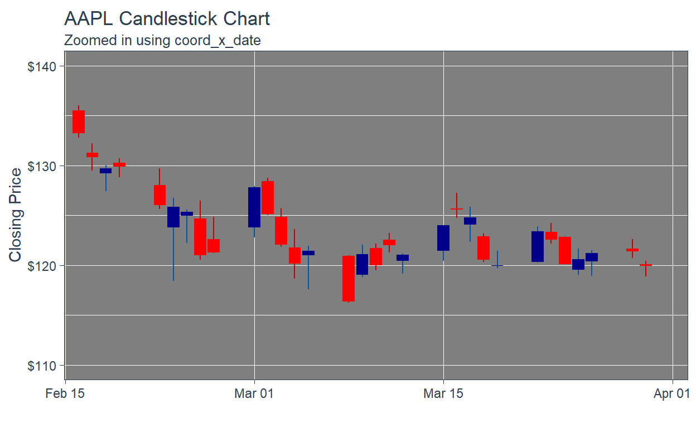
5.1.3 Candlestick Chart- Zooming into 1 week
AAPL %>%
ggplot(aes(x = date, y = close)) +
geom_candlestick(aes(open = open, high = high, low = low, close = close)) +
labs(title = "AAPL Candlestick Chart",
subtitle = "Zoomed in using coord_x_date - 14 days",
y = "Closing Price", x = "") +
coord_x_date(xlim = c(end - weeks(1), end),
ylim = c(115, 130)) +
theme_tq() +
scale_color_tq(theme = "dark") +
scale_y_continuous(labels = scales::dollar)
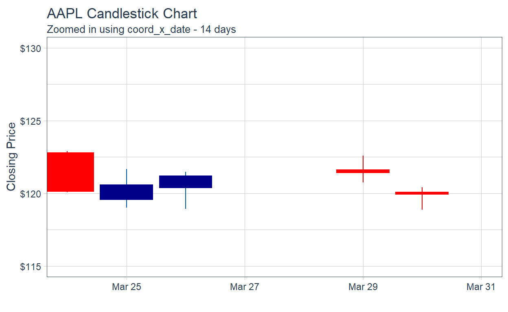
5.1.4 Candlestick Chart- Using different colours for the candlesticks.
The colors can be modified using colour_up and colour_down, which control the line color, and fill_up and fill_down, which control the rectangle fills.Using RED and GREEN - makes it very clear for the user.. which is the ‘danger’ candlestick.
AAPL %>%
ggplot(aes(x = date, y = close)) +
geom_candlestick(aes(open = open, high = high, low = low, close = close),
colour_up = "darkgreen", colour_down = "darkred",
fill_up = "darkgreen", fill_down = "darkred") +
labs(title = "AAPL Candlestick Chart- 6 weeks ",
subtitle = "Zoomed in, Experimenting with Formatting: dark red and dark green gives the best visual",
y = "Closing Price", x = "") +
coord_x_date(xlim = c(end - weeks(6), end),
ylim = c(110, 140)) +
theme_tq()
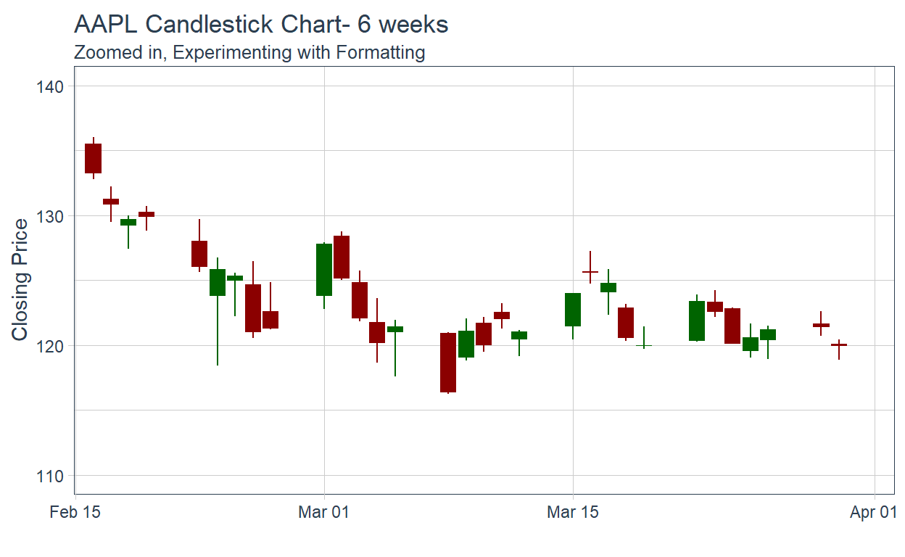
KEY LEARNING : Red and Green is a good colour palette to immediately show up the days where the closing price was lower then the opening price ( Red )- makes the candle chart quickly readable.
5.1.5 Price Bar Chart- alternative to candlestick
Price Bar Chart - Each bar typically shows open, high, low, and closing (OHLC) prices. Bar charts are very similar to candlestick charts. The two chart types show the same information but in different ways. A bar chart is composed of a vertical line with small horizontal lines on the left and right that show the open and close. Candlesticks also have a vertical line showing the high and low of the period (called a shadow or wick), but the difference between the open and close is represented by a thicker portion called a real body. The body is shaded in or colored red if the close is below the open. The body is white or green if the close is above the open. While the information is the same, the visual look of the two chart types is different.
AAPL %>%
ggplot(aes(x = date, y = close)) +
geom_barchart(aes(open = open, high = high, low = low, close = close)) +
labs(title = "AAPL Bar Chart -Stock Prices",
subtitle = "The bar chart does not give move meaningful info then the line chart for large time scales",
y = "Closing Price in USD", x = ")+
")+
theme_tq()
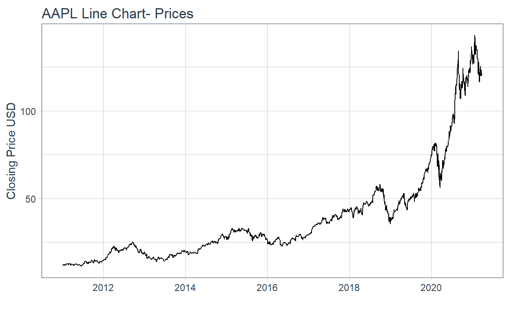
KEY LEARNING : The bar chart does not give move meaningful info then the line chart for large time scales
5.1.6 Price BarChart- for 4 weeks - zoomed in
AAPL %>%
ggplot(aes(x = date, y = close)) +
geom_barchart(aes(open = open, high = high, low = low, close = close),
colour_up = "darkgreen", colour_down = "darkred", size = 0.8) +
labs(title = "AAPL Bar Chart of Stock Prices",
subtitle = "Zoomed in using coord_x_date- colour_up = darkgreen, colour_down = darkred",
y = "Closing Price", x = "") +
coord_x_date(xlim = c(end - weeks(4), end),
ylim = c(110, 130)) +
theme_tq()
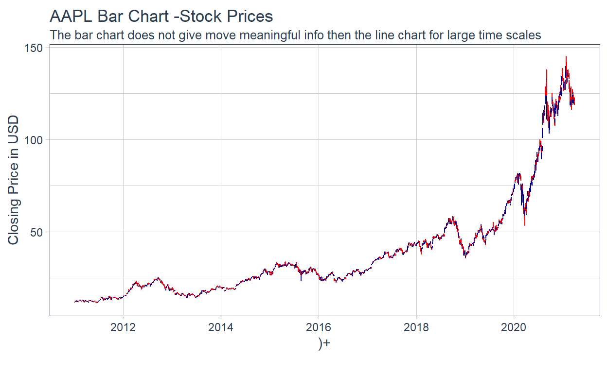
Key Learning :Candle Charts far easier to interpret than Pricebarcharts and much easier to read.
5.2 Stock Price/TradingVolume/Returns
Exploring the varies ways to visualize Price/TradingVolume/Returns/Moving Averages.
5.2.1 Price Line Chart- for the full period
AAPL %>%
ggplot(aes(x = date, y = close)) +
geom_line() +
labs(title = "AAPL Line Chart- Prices", y = "Closing Price in USD", x = "") +
theme_tq()
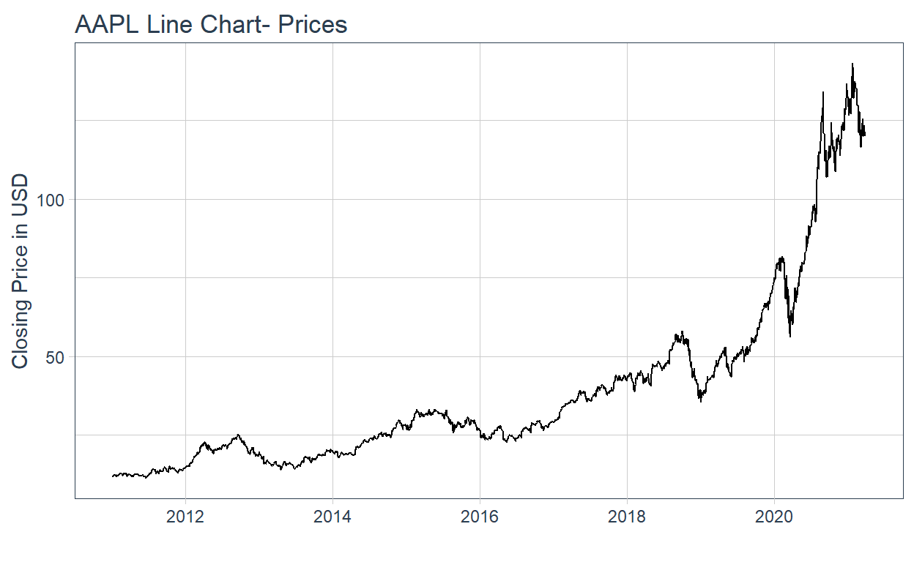
5.2.2 Stock Volume Chart
We can use the geom_segment() function to chart daily volume, which uses xy points for the beginning and end of the line. Using the aesthetic color argument, we color based on the value of volume to make these data stick out.
AAPL %>%
ggplot(aes(x = date, y = volume)) +
geom_segment(aes(xend = date, yend = 0, color = volume)) +
geom_smooth(method = "loess", se = FALSE) +
labs(title = "APPLE Volume Chart - Bar Chart - Whole Period",
subtitle = "Charting Daily Volume",
y = "Volume", x = "") +
theme_tq() +
theme(legend.position = "none")
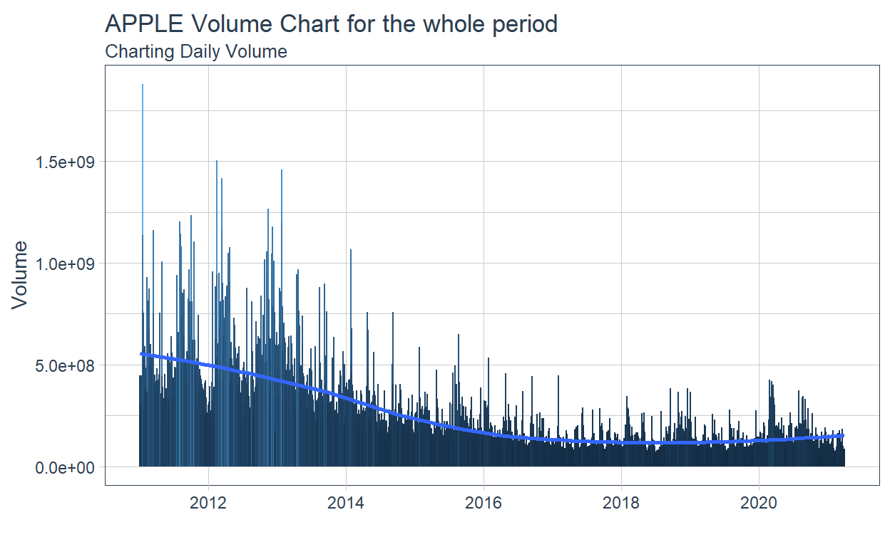
5.2.3 Volume Chart - using Geom_segment- zoomed into past 50 days
And, we can zoom in on a specific region. Using scale_color_gradient we can quickly visualize the high and low points, and using geom_smooth we can see the trend.
start <- end - weeks(24)
AAPL %>%
filter(date >= start - days(20)) %>%
ggplot(aes(x = date, y = volume)) +
geom_segment(aes(xend = date, yend = 0, color = volume)) +
geom_smooth(method = "loess", se = FALSE) +
labs(title = "APPLE Price Chart - Bar Chart- WHole Period",
subtitle = "Charting Daily Volume, Zooming In to past 20 days",
y = "Volume", x = "") +
coord_x_date(xlim = c(start, end)) +
scale_color_gradient(low = "red", high = "darkblue") +
theme_tq() +
theme(legend.position = "none")
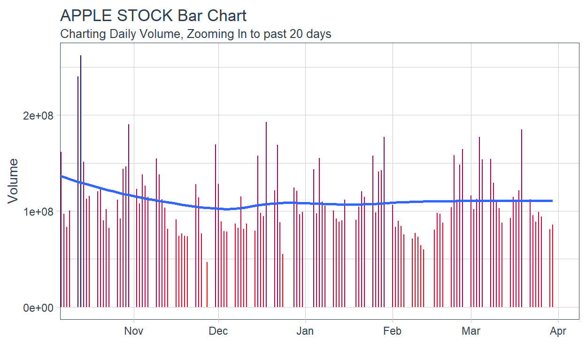
5.2.4 Single Stock Returns Chart - Line Chart/Time series.
Showing monthly return for single stock
tq_get(c("AAPL"), get="stock.prices") %>%
tq_transmute(select=adjusted,
mutate_fun=periodReturn,
period="monthly",
col_rename = "monthly_return") %>%
ggplot(aes(date, monthly_return)) +
labs(title = "APPLE STOCK-Monthly Return - Line Chart") +
geom_line()
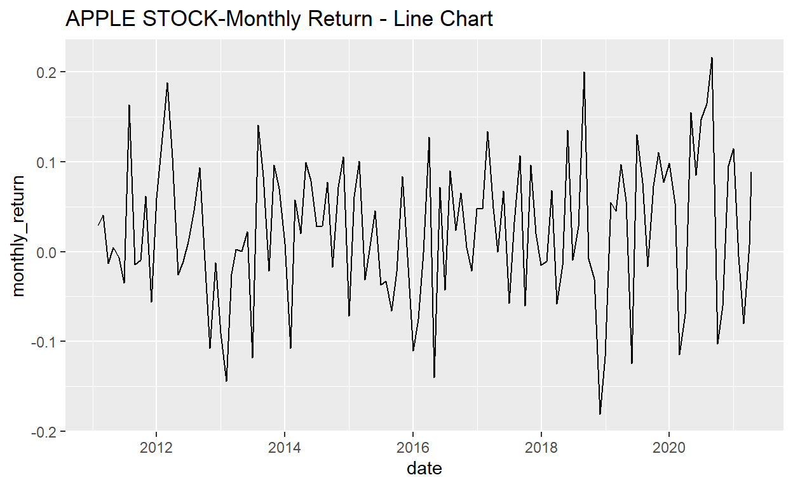
5.2.5 Moving Averages
Visualizing Trends averages is important for time-series analysis of stocks. For example : A simple moving average (SMA) calculates the average of a selected range of prices, usually closing prices, by the number of periods in that range. A simple moving average is a technical indicator that can aid in determining if an asset price will continue or if it will reverse a bull or bear trend.A simple moving average can be enhanced as an exponential moving average (EMA) that is more heavily weighted on recent price action.
Tidyquant includes geoms to enable “rapid prototyping” to quickly visualize signals using moving averages and Bollinger bands.
Within Tidyquant the following moving averages are available:
1)Simple moving averages (SMA) 2)Exponential moving averages (EMA)
.. and more advanced averages : 3)Weighted moving averages (WMA) 4)Double exponential moving averages (DEMA) 5)Zero-lag exponential moving averages (ZLEMA) 6)Volume-weighted moving averages (VWMA) (also known as VWAP) 7)Elastic, volume-weighted moving averages (EVWMA) (also known as MVWAP)
For exploration : We will visualize the SMA, EMA.
5.2.5.1 Charting the 14-day,50-day and 200-day Simple Moving Average
Charting the 50-day and 200-day simple moving average using the SMA funciton as an example.We apply the moving average geoms after the candlestick geom to overlay the moving averages on top of the candlesticks. We add two moving average calls, one for the 50-day and the other for the 200-day. We add color = “red” and linetype = 5 to distinguish the 200-day from the 50-day.
AAPL %>%
ggplot(aes(x = date, y = close)) +
geom_candlestick(aes(open = open, high = high, low = low, close = close)) +
geom_ma(ma_fun = SMA, n = 14, color= 'green', size = 1.25) +
geom_ma(ma_fun = SMA, n = 50, color= 'blue', size = 1.25) +
geom_ma(ma_fun = SMA, n = 200, color = "red", size = 1.25) +
labs(title = "AAPL Candlestick Chart",
subtitle = "14-Day SMA(green),50-Day SMA(blue) and 200-DaySMA (red )",
y = "Closing Price", x = "") +
coord_x_date(xlim = c(end - weeks(24), end),
ylim = c(80, 160)) +
theme_tq()

5.2.5.2 Charting Exponential Moving Average (EMA)
AAPL %>%
ggplot(aes(x = date, y = close)) +
geom_barchart(aes(open = open, high = high, low = low, close = close)) +
geom_ma(ma_fun = EMA, n = 50, wilder = TRUE, linetype = 5, size = 1.25) +
geom_ma(ma_fun = EMA, n = 200, wilder = TRUE, color = "red", size = 1.25) +
labs(title = "AAPL Bar Chart",
subtitle = "50 (Blue) and 200-Day (Red) EMA ",
y = "Closing Price", x = "") +
coord_x_date(xlim = c(end - weeks(24), end),
ylim = c(80, 160)) +
theme_tq()
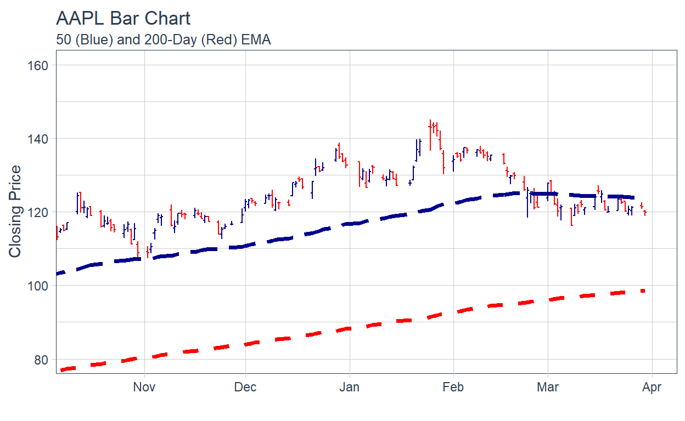
5.2.5.3 Charting for Reviewing Stock Volatility - Bolingar Bands
WHy Bollinger Bands - Bollinger Bands are used to visualize volatility by plotting a range around a moving average typically two standard deviations up and down. Because they use a moving average, the geom_bbands function works almost identically to geom_ma. The same seven moving averages are compatible. The main difference is the addition of the standard deviation, sd, argument which is 2 by default, and the high, low and close aesthetics which are required to calculate the bands.
5.2.5.4.1 Applying BBands using a SMA
AAPL %>%
ggplot(aes(x = date, y = close, open = open,
high = high, low = low, close = close)) +
geom_candlestick() +
geom_bbands(ma_fun = SMA, sd = 2, n = 20) +
labs(title = "AAPL Candlestick Chart",
subtitle = "BBands with SMA Applied",
y = "Closing Price", x = "") +
coord_x_date(xlim = c(end - weeks(24), end),
ylim = c(80, 160)) +
theme_tq()
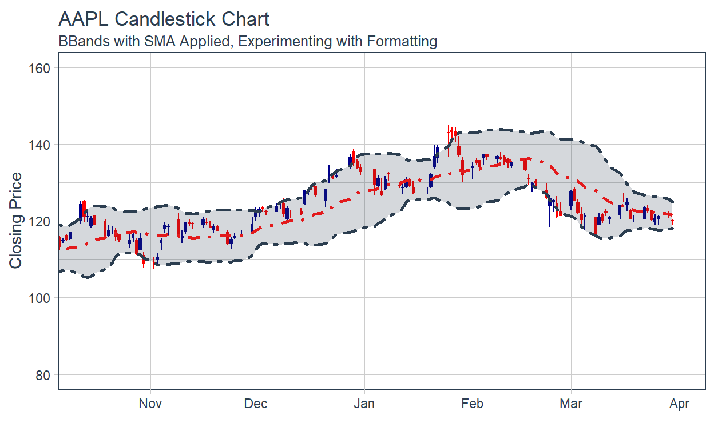
Modifying the appearance of Bollinger Bands
AAPL %>%
ggplot(aes(x = date, y = close, open = open,
high = high, low = low, close = close)) +
geom_candlestick() +
geom_bbands(ma_fun = SMA, sd = 2, n = 20,
linetype = 4, size = 1, alpha = 0.2,
fill = palette_light()[[1]],
color_bands = palette_light()[[1]],
color_ma = palette_light()[[2]]) +
labs(title = "AAPL Candlestick Chart",
subtitle = "BBands with SMA Applied, Experimenting with Formatting",
y = "Closing Price", x = "") +
coord_x_date(xlim = c(end - weeks(24), end),
ylim = c(80, 160)) +
theme_tq()
6. Charting for Multiple Securities
The main fucntion here is to use facet_wrap to visualize multiple stocks at the same time. By adding a group aesthetic in the main ggplot() function and combining with a facet_wrap() function at the end of the ggplot workflow, all five “FAANG” stocks can be viewed simultaneously.
6.1 Multiple securities -Closing prices
6.1.1 Multiple securities - closing prices - in a Timeseries Line Chart
tq_get(c("GOOG","AMZN","FB","AAPL","NFLX"),get="stock.prices") %>%
ggplot(aes(date, close, color=symbol)) +
geom_line()
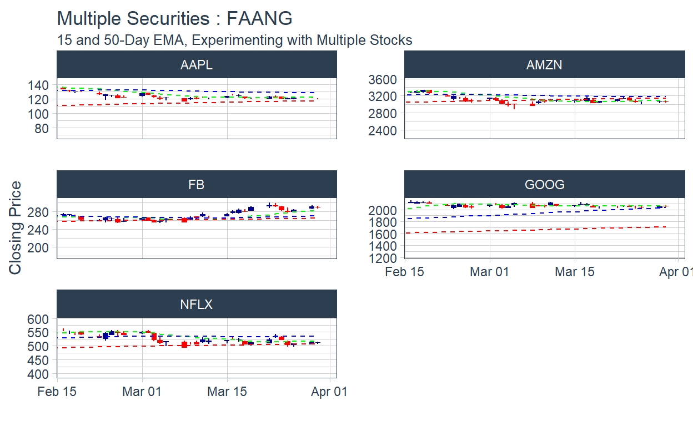
6.1.2 Multiple securities - closing prices - in Facet
start <- end - weeks(6)
FAANG %>%
filter(date >= start - days(2 * 15)) %>%
ggplot(aes(x = date, y = close, group = symbol)) +
geom_candlestick(aes(open = open, high = high, low = low, close = close)) +
labs(title = "FAANG Candlestick Chart",
subtitle = "Experimenting with Mulitple Stocks",
y = "Closing Price", x = "") +
coord_x_date(xlim = c(start, end)) +
facet_wrap(~ symbol, ncol = 2, scale = "free_y") +
theme_tq()
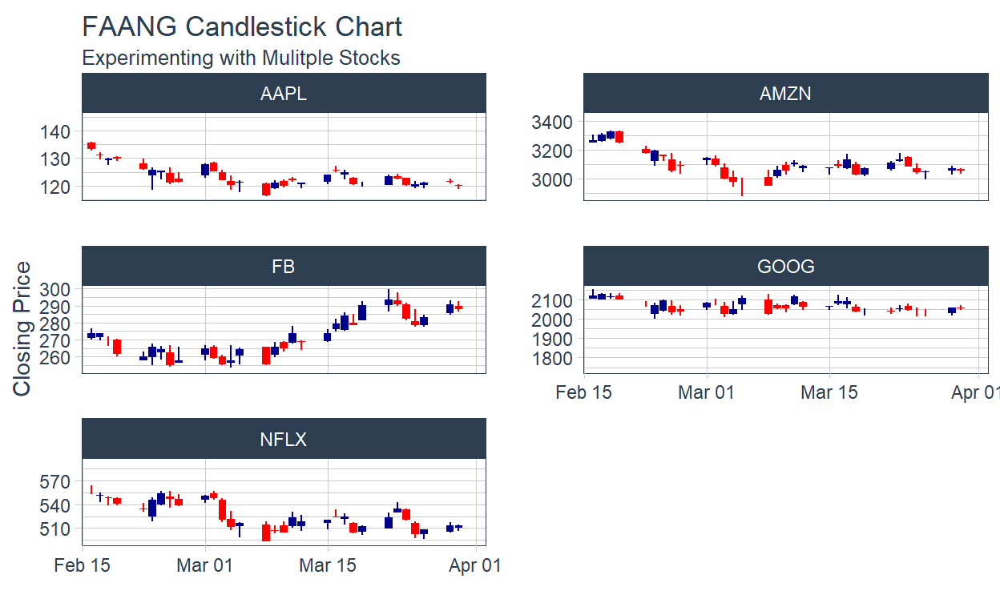
6.2 Multiple securities -Moving averages for multiple stocks at once
Experimenting with plotting multiple moving averages.
start <- end - weeks(6)
FAANG %>%
filter(date >= start - days(6 * 50)) %>%
ggplot(aes(x = date, y = close, volume = volume, group = symbol)) +
geom_candlestick(aes(open = open, high = high, low = low, close = close)) +
geom_ma(ma_fun = SMA, n = 14, color= 'green', size = 0.5) +
geom_ma(ma_fun = SMA, n = 50, color= 'blue', size = 0.5) +
geom_ma(ma_fun = SMA, n = 200, color = "red", size = 0.5) +
labs(title = "Multiple Securities : FAANG ",
subtitle = "15 and 50-Day EMA, Experimenting with Multiple Stocks",
y = "Closing Price", x = "") +
coord_x_date(xlim = c(start, end)) +
facet_wrap(~ symbol, ncol = 2, scales = "free_y") +
theme_tq()
KEY LEARNING : It doesn’t make sense to plot multiple moving average days in one combined visual.. as the lines are too close to visualize.
start <- end - weeks(6)
FAANG %>%
filter(date >= start - days(2 * 15)) %>%
ggplot(aes(x = date, y = close, volume = volume, group = symbol)) +
geom_candlestick(aes(open = open, high = high, low = low, close = close)) +
geom_ma(ma_fun = SMA, n = 15, color= 'blue', size = 0.5) +
labs(title = "Multiple Securities : FAANG ",
subtitle = "30-Day SMA, Experimenting with Multiple Stocks",
y = "Closing Price", x = "") +
coord_x_date(xlim = c(start, end)) +
facet_wrap(~ symbol, ncol = 2, scales = "free_y") +
theme_tq()
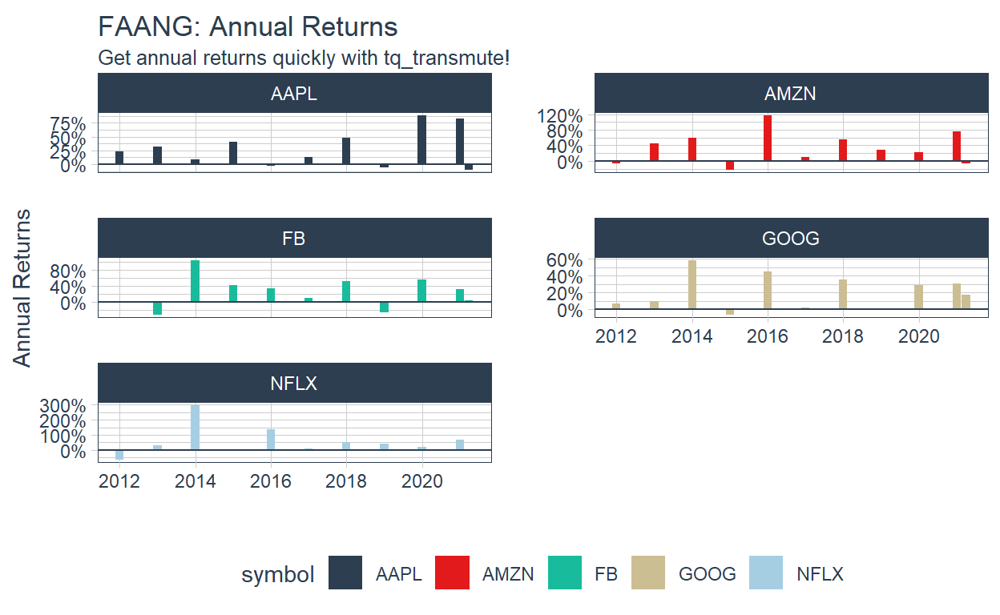
*** KEY LEARNING *** FAANG data is filtered by date from double the number of moving-average days (2 * n) previous to the start date. This yields a nice y-axis scale and still allows us to create a moving average line using geom_ma.Too much out-of-bounds data distorts the scale of the y-axis, and too little and we cannot get a moving average. The optimal method is to include “just enough” out-of-bounds data to get the chart we want.
6.3 Multiple securities -BBands for multiple stocks
This is to try out the geom_bbands and facet_wrap functions.
start <- end - weeks(24)
FAANG %>%
filter(date >= start - days(2 * 20)) %>%
ggplot(aes(x = date, y = close,
open = open, high = high, low = low, close = close,
group = symbol)) +
geom_barchart() +
geom_bbands(ma_fun = SMA, sd = 2, n = 20, linetype = 5) +
labs(title = "Multiple Securities : FAANG ",
subtitle = "BBands with SMA Applied, Experimenting with Multiple Stocks",
y = "Closing Price", x = "") +
coord_x_date(xlim = c(start, end)) +
facet_wrap(~ symbol, ncol = 2, scales = "free_y") +
theme_tq()

6.4 Multiple securities -Annural Returns
6.4.2 Multiple Stocks in a Facet Chart
This is to try out the tq_transmute function.
FAANG_annual_returns <- FAANG %>%
group_by(symbol) %>%
tq_transmute(select = adjusted,
mutate_fun = periodReturn,
period = "yearly",
type = "arithmetic")
FAANG_annual_returns %>%
ggplot(aes(x = date, y = yearly.returns, fill = symbol)) +
geom_col() +
geom_hline(yintercept = 0, color = palette_light()[[1]]) +
scale_y_continuous(labels = scales::percent) +
labs(title = "FAANG: Annual Returns",
subtitle = "Get annual returns quickly with tq_transmute!",
y = "Annual Returns", x = "") +
facet_wrap(~ symbol, ncol = 2, scales = "free_y") +
theme_tq() +
scale_fill_tq()
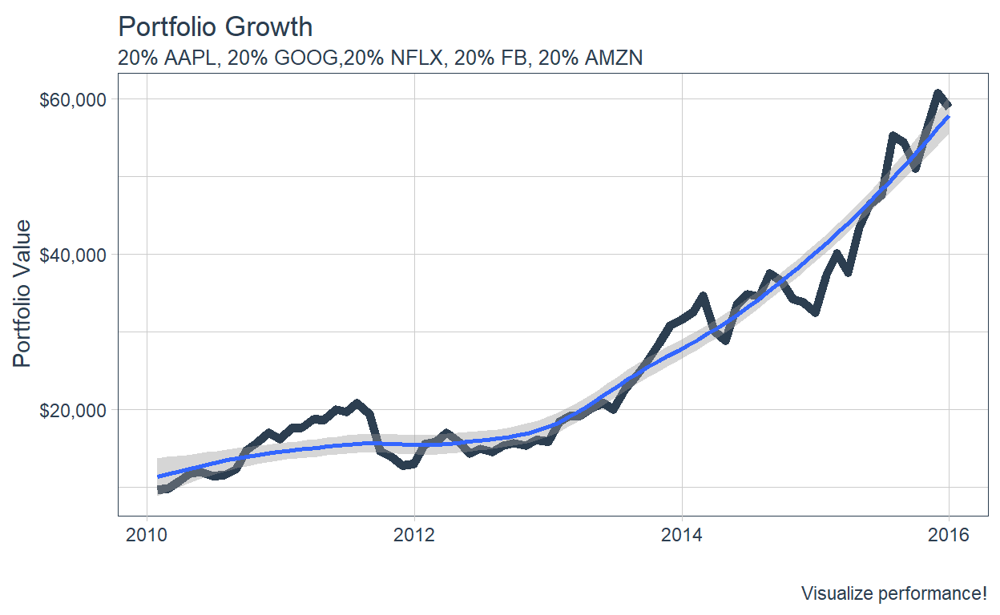
6.5 Portfolio Analysis using tq_portfolio function.
6.5.1 Portfolio Returns
stock_returns_monthly <- c("AAPL", "GOOG", "NFLX","FB","AMZN") %>%
tq_get(get = "stock.prices",
from = "2010-01-01",
to = "2015-12-31") %>%
group_by(symbol) %>%
tq_transmute(select = adjusted,
mutate_fun = periodReturn,
period = "monthly",
col_rename = "Ra")
wts <- c(0.2, 0.2, 0.2,0.2,0.2)
portfolio_returns_monthly <- stock_returns_monthly %>%
tq_portfolio(assets_col = symbol,
returns_col = Ra,
weights = wts,
col_rename = "Ra")
portfolio_returns_monthly %>%
ggplot(aes(x = date, y = Ra)) +
geom_bar(stat = "identity", fill = palette_light()[[1]]) +
labs(title = "Portfolio Returns",
subtitle = "20% AAPL, 20% GOOG,20% NFLX, 20% FB, 20% AMZN",
caption = "Shows an above-zero trend meaning positive returns",
x = "", y = "Monthly Returns") +
geom_smooth(method = "lm") +
theme_tq() +
scale_color_tq() +
scale_y_continuous(labels = scales::percent)
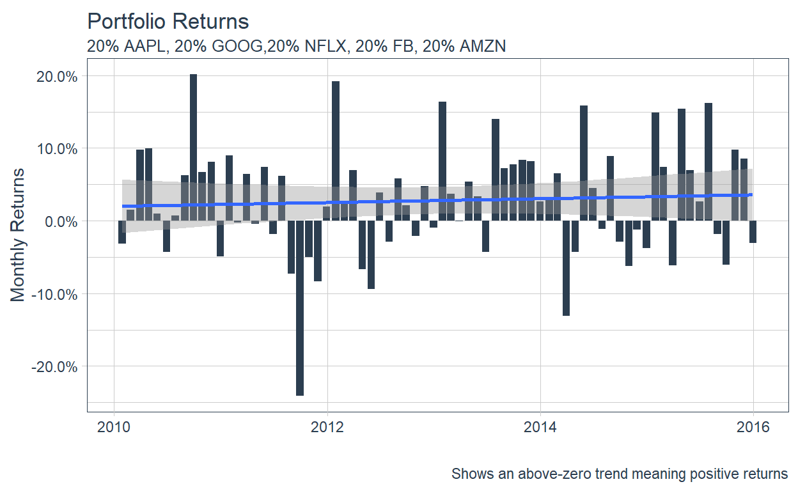
6.5.2 Portfolio Growth
wts <- c(0.2,0.2,0.2,0.2,0.2)
portfolio_growth_monthly <- stock_returns_monthly %>%
tq_portfolio(assets_col = symbol,
returns_col = Ra,
weights = wts,
col_rename = "investment.growth",
wealth.index = TRUE) %>%
mutate(investment.growth = investment.growth * 10000)
portfolio_growth_monthly %>%
ggplot(aes(x = date, y = investment.growth)) +
geom_line(size = 1.5, color = palette_light()[[1]]) +
labs(title = "Portfolio Growth",
subtitle = "20% AAPL, 20% GOOG,20% NFLX, 20% FB, 20% AMZN",
caption = "Visualize performance!",
x = "", y = "Portfolio Value") +
geom_smooth(method = "loess") +
theme_tq() +
scale_color_tq() +
scale_y_continuous(labels = scales::dollar)

6.5.3 Visualizing Multiple Portfolios
To visualize multiple portfolios, we just need to configure the WEIGHTs table, for the chosen number of 3 stocks.
20% AAPL, 25% GOOG, 25% NFLX, 20% FB,10% AMZN 15% AAPL, 50% GOOG, 25% NFLX, 5% FB,5% AMZN 15% AAPL, 25% GOOG, 40% NFLX, 10% FB,10% AMZN
weights <- c(
0.2, 0.25, 0.25,0.2,0.1,
0.10, 0.40, 0.3,0.1,0.1,
0.15, 0.25, 0.40,0.1,0.1
)
stocks <- c("AAPL", "GOOG", "NFLX","FB","AMZN")
weights_table <- tibble(stocks) %>%
tq_repeat_df(n =3) %>%
bind_cols(tibble(weights)) %>%
group_by(portfolio)
stock_returns_monthly_multi <- stock_returns_monthly %>%
tq_repeat_df(n = 3)
portfolio_growth_monthly_multi <- stock_returns_monthly_multi %>%
tq_portfolio(assets_col = symbol,
returns_col = Ra,
weights = weights_table,
col_rename = "investment.growth",
wealth.index = TRUE) %>%
mutate(investment.growth = investment.growth * 10000)
portfolio_growth_monthly_multi %>%
ggplot(aes(x = date, y = investment.growth, color = factor(portfolio))) +
geom_line(size = 1) +
labs(title = "Portfolio Growth",
subtitle = "Comparing Multiple Portfolios- Portfolio 2 has the highest returns",
caption = "Best Performing Porfolio -3 : 15% AAPL, 25% GOOG, 40% NFLX,10% FB,10% AMZN",
x = "", y = "Portfolio Value",
color = "Portfolio") +
geom_smooth(method = "loess") +
theme_tq() +
scale_color_tq() +
scale_y_continuous(labels = scales::dollar)
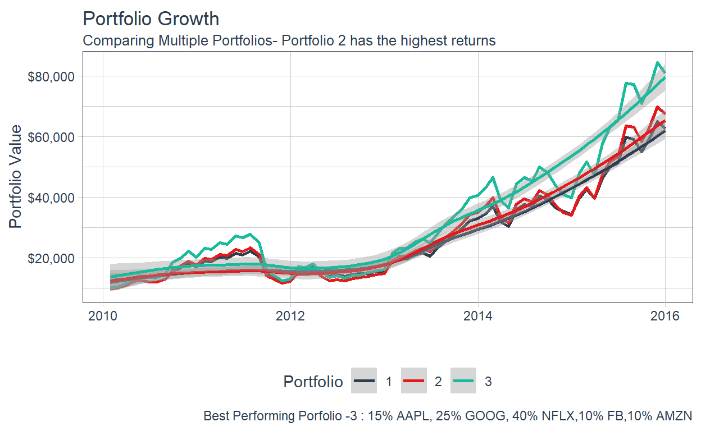
6.6 Miscelleneous Plotting experiementations
6.6.1 GGPLOT - Exploration of Log Scale vs Continous Scale on Y for stock prices
AMZN %>%
ggplot(aes(x = date, y = adjusted)) +
geom_line(color = palette_light()[[1]]) +
scale_y_continuous() +
labs(title = "AMZN Line Chart",
subtitle = "Continuous Scale",
y = "Closing Price", x = "") +
theme_tq()
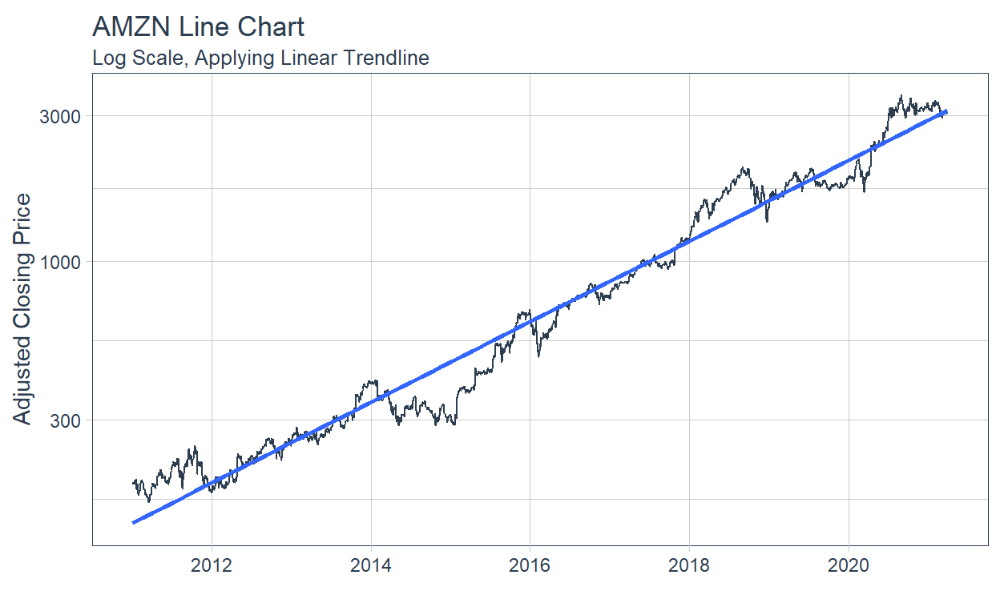
AMZN %>%
ggplot(aes(x = date, y = adjusted)) +
geom_line(color = palette_light()[[1]]) +
scale_y_log10() +
labs(title = "AMZN Line Chart",
subtitle = "Log Scale",
y = "Closing Price", x = "") +
theme_tq()
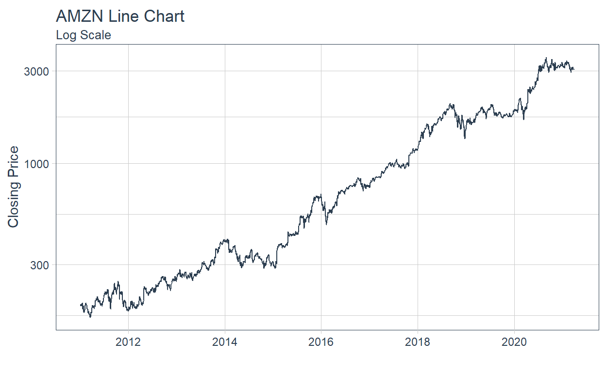
6.6.2 GGPLOT - Plotting Regression trendlines with geom_smooth
AMZN %>%
ggplot(aes(x = date, y = adjusted)) +
geom_line(color = palette_light()[[1]]) +
scale_y_log10() +
geom_smooth(method = "lm") +
labs(title = "AMZN Line Chart",
subtitle = "Log Scale, Applying Linear Trendline",
y = "Adjusted Closing Price", x = "") +
theme_tq()
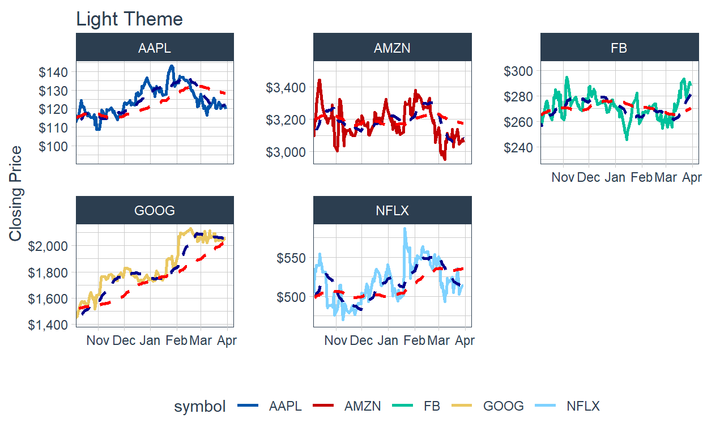
6.6.3 Tidyquant Themes
6.6.3.1 Testing with Dark Theme and thin lines
n_mavg <- 50 # Number of periods (days) for moving average
FAANG %>%
filter(date >= start - days(2 * n_mavg)) %>%
ggplot(aes(x = date, y = close, color = symbol)) +
geom_line(size = 0.2) +
geom_ma(n = 15, color = "darkblue", size = 0.2) +
geom_ma(n = n_mavg, color = "red", size = 0.2) +
labs(title = "Dark Theme and thin lines- size 0.2",
x = "", y = "Closing Price") +
coord_x_date(xlim = c(start, end)) +
facet_wrap(~ symbol, scales = "free_y") +
theme_tq_dark() +
scale_color_tq(theme = "dark") +
scale_y_continuous(labels = scales::dollar)
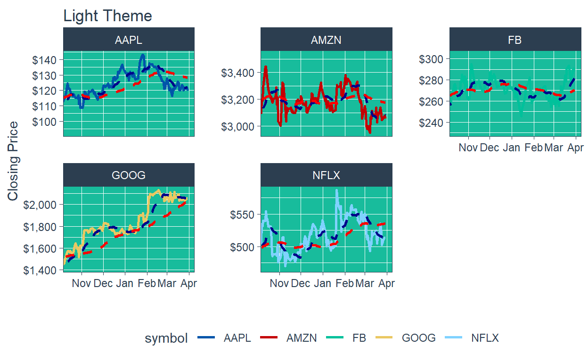
n_mavg <- 50 # Number of periods (days) for moving average
FAANG %>%
filter(date >= start - days(2 * n_mavg)) %>%
ggplot(aes(x = date, y = close, color = symbol)) +
geom_line(size = 1.5) +
geom_ma(n = 15, color = "darkblue", size = 1.5) +
geom_ma(n = n_mavg, color = "red", size = 1.5) +
labs(title = "Light Theme with thicker lines of size -1.5",
x = "", y = "Closing Price") +
coord_x_date(xlim = c(start, end)) +
facet_wrap(~ symbol, scales = "free_y") +
theme_tq() +
scale_color_tq(theme = "dark") +
scale_y_continuous(labels = scales::dollar)
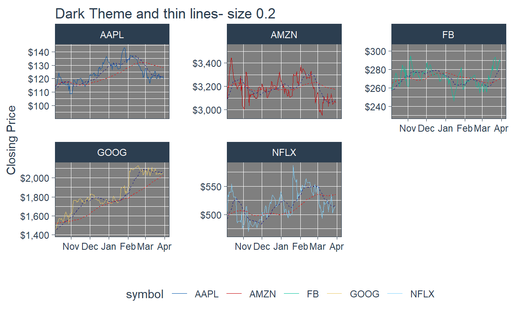
n_mavg <- 50 # Number of periods (days) for moving average
FAANG %>%
filter(date >= start - days(2 * n_mavg)) %>%
ggplot(aes(x = date, y = close, color = symbol)) +
geom_line(size = 1) +
geom_ma(n = 15, color = "darkblue", size = 1) +
geom_ma(n = n_mavg, color = "red", size = 1) +
labs(title = "Green Theme with normal size line",
x = "", y = "Closing Price") +
coord_x_date(xlim = c(start, end)) +
facet_wrap(~ symbol, scales = "free_y") +
theme_tq_green() +
scale_color_tq(theme = "dark") +
scale_y_continuous(labels = scales::dollar)
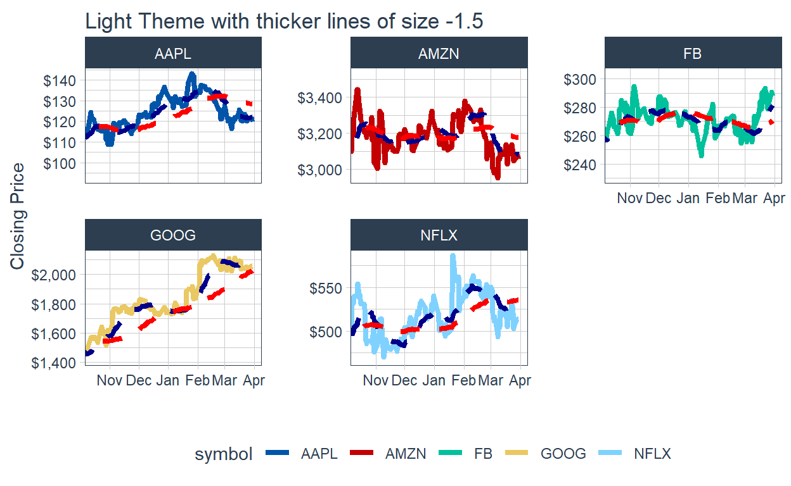
Key Learning : THe other colour schemes - will invariably collide with one of the coloured lines - eg. in the last example above. The white theme with normal size line of 1 is good for single charts, and for faceted charts, white background with a fine line width of about 0.8 : still presents the information with better clarity, and should be used for overall approach.
7.0 Reflection- Conclusion/Key Learnings/Benefits of Interactivity in the Shiny App
A interactive implementation of the above would be able to bring much better user experience. Based on experimenting with various formats, graph and chart options i think :
a)Candle-stick is clearer for the user to read then barchart
b)Facets provide possiblity to read the details per stock ( when comparing a portofolio of stocks ) and should be provided as an additional option in addition to the typical ‘one chart’.
c)The default theme ‘white’ is much clearer than the fancier color schemes such as grey/green.
d)THe log-scale for y-axis eg. for stock prices although allowing more to be captured, can be misleading and is not recommended to be used for stock prices- especially for intepreting trends.
7.1 Interactive User Experience and Self Configuration of views
The user will be able select the range date for “zooming” down into the chart rather than hard-coding as above. Example a candlestick chart is not meaningful over multi-years.
The user will be able to use a drop-down menu to select the type of charts he wish to view both for single stock or groups of stock
The example shows the group stock analysis for 5 chosen stocks, in an interactive implementation the user will be able to decide which stocks he wants to view and compare as a group.
With an interactive add the portfolio mix can also be ‘configured’ for various scenarios
7.2 Finer details - Interacing with Chart Points.
With an interactive visualisation, the user is able to see more detail about the chart, by ‘hovering’ over the chart. Currently, all values have to be ‘read off’ the grid, and the user has to estimate the X and Y values based on the grid lines, instead of knowing the exact values.
8.0 Possible SHiny App Story Board for Stock Analysis

9.0 References
1)Tidyquant Reference Manual : https://cloud.r-project.org/web/packages/tidyquant/tidyquant.pdf : 5th March 2021
2)Introduction to TidyQuant https://cloud.r-project.org/web/packages/tidyquant/vignettes/TQ00-introduction-to-tidyquant.html
3)R Graphics Cook Book - Winston Chong
4)Workflow for : TidyQuant Portfolio Analysis https://cloud.r-project.org/web/packages/tidyquant/vignettes/TQ05-performance-analysis-with-tidyquant.html
5)Various Examples https://edav.info/tidyquant.html